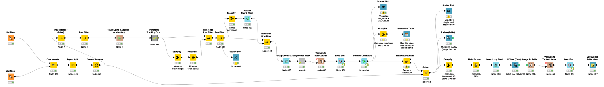
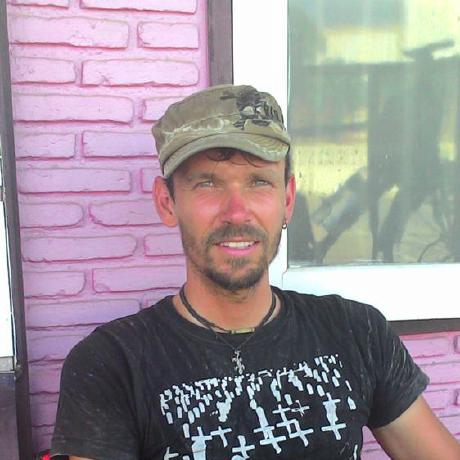
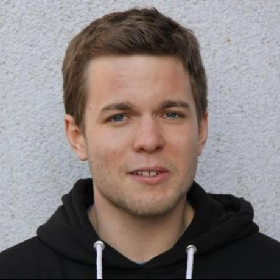

Image Segmentation,
Single-Molecule Tracking,
and Data Analysis
Jan Eglinger
Friedrich Miescher Institute for Biomedical Research (FMI)
Facility for Advanced Imaging and Microscopy (FAIM)
Basel, Switzerland
( imagejan on github and the ImageJ forum )
The SciJava ecosystem

Example use cases
- Chromatin dynamics in budding yeast
- Regulation of gene expression
- Gene regulation in C. elegans development
Chromatin Dynamics
in Budding Yeast

Michi
Hauer
Andrew
Seeber
Susan
Gasser
Hauer et al. 2017
Nature Structural and Molecular Biology
http://doi.org/10.1038/nsmb.3347
(Supplement)
Chromatin dynamics
Strategy
- Track single spot per cell in the nucleus
- Filter only max quality spot per frame
- Calculate Mean Square Displacement (MSD)
- Plot MSD curve grouped by condition
Regulation of Gene Expression

Franka
Voigt
Jeff
Chao
Gene expression
Strategy
- Tracking of mRNAs in 2 channels
- Restrict tracking to cytoplasm only
- Classify double-positive track segments
- Compute diffusion characteristics
Gene Regulation
in C. elegans Development

Yannick
Hauser
Helge
Grosshans
Gene Regulation
in C. elegans Development

Yannick
Hauser
Helge
Grosshans
Gene regulation
Input data
| Bit depth | 16 |
| x | 1024 |
| y | 1024 |
| z | 23 |
| Channels | 2 |
| Frames | 313 |
| Positions | 27 |
One dataset of 0.75 TB per weekend
Gene regulation
Strategy
- Segment worm from background
- Machine learning (ilastik Pixel Classification)
- Get intensity profile over worm length
- ImageJ2 Plugin
- Quantify marker dynamics during worm growth
- R View
Outlook
Thanks!
Yannick
Hauser
Helge
Grosshans
Franka
Voigt
Jeff
Chao
Michi
Hauer
Andrew
Seeber
Susan
Gasser

Martin
Horn
Tim-Oliver
Buchholz
Gabriel
Einsdorf

Christian
Dietz
Curtis
Rueden